A line-up forEvery moment
At the heart of JamBag is a quartet. For more intimate moments, the same team plays as a trio, a duo or solo.
Live band · Weddings and events · France and worldwide
JamBag, a live pop-rock band from France. A show that brings people together, for weddings and corporate events, wherever you celebrate.
We create the moment when every guest starts singing.
JamBag is four musicians from France. We play the hits that bring every generation together, rearranged in pop-rock, for weddings, corporate events and big stages, at home and abroad.
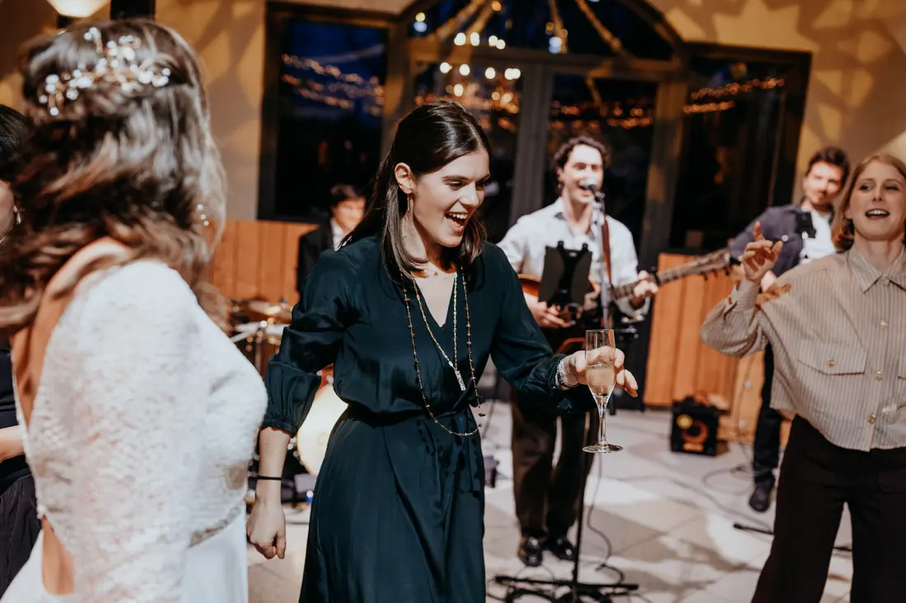

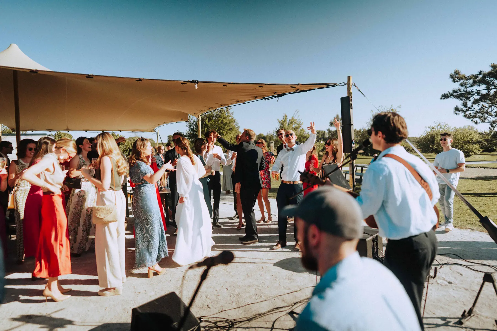
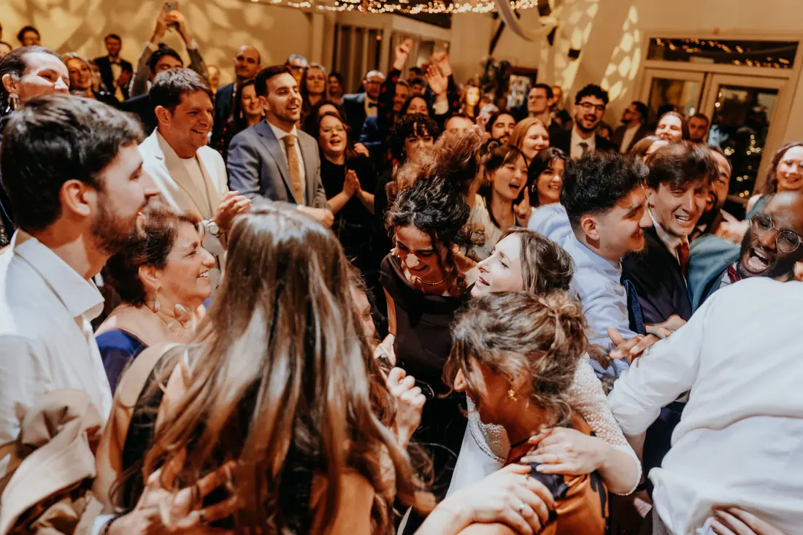
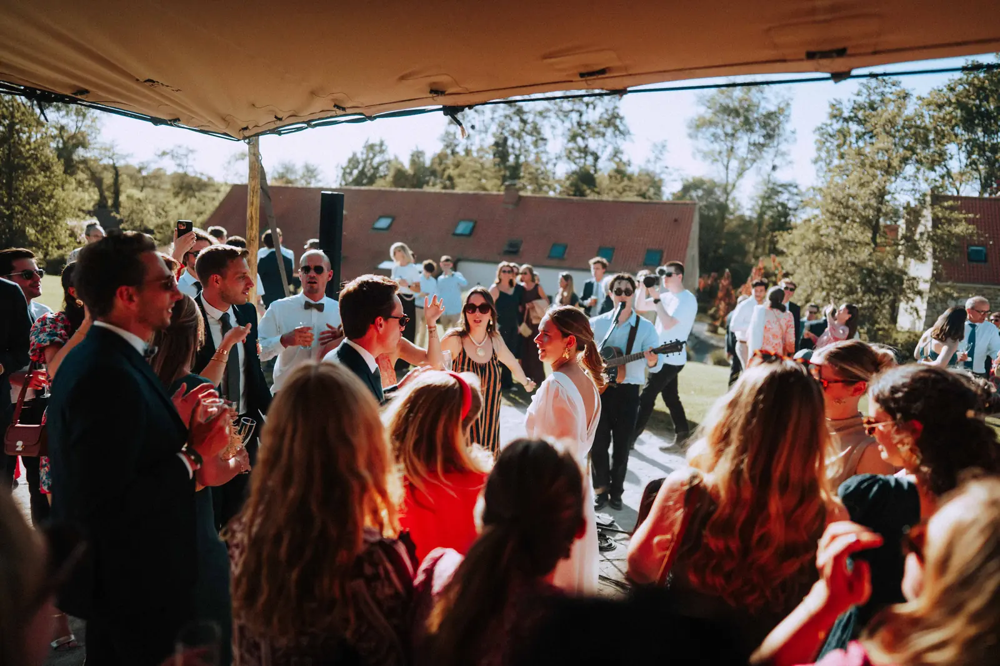
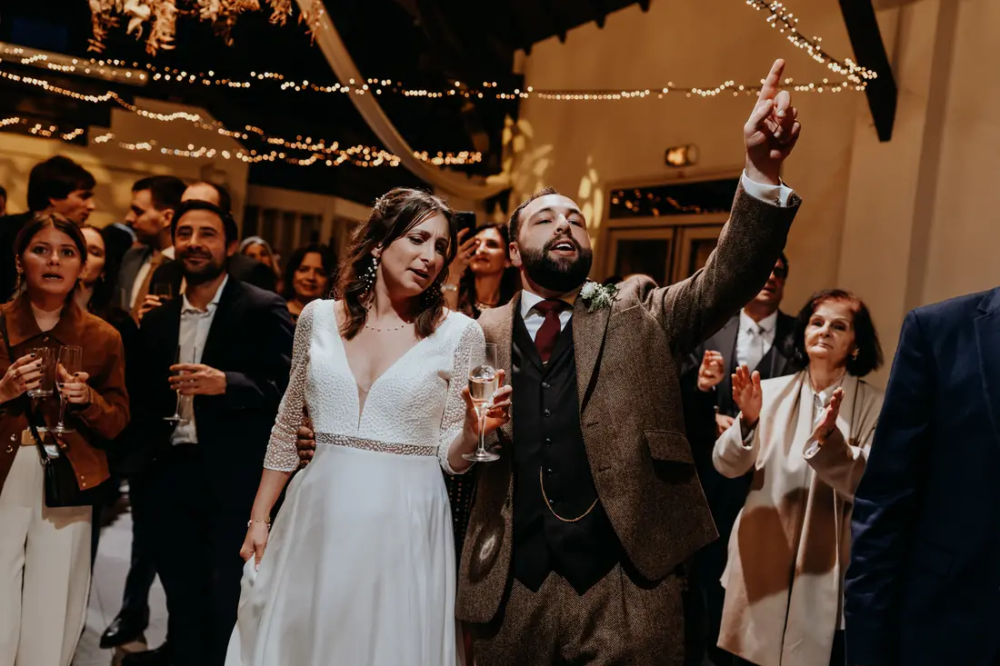
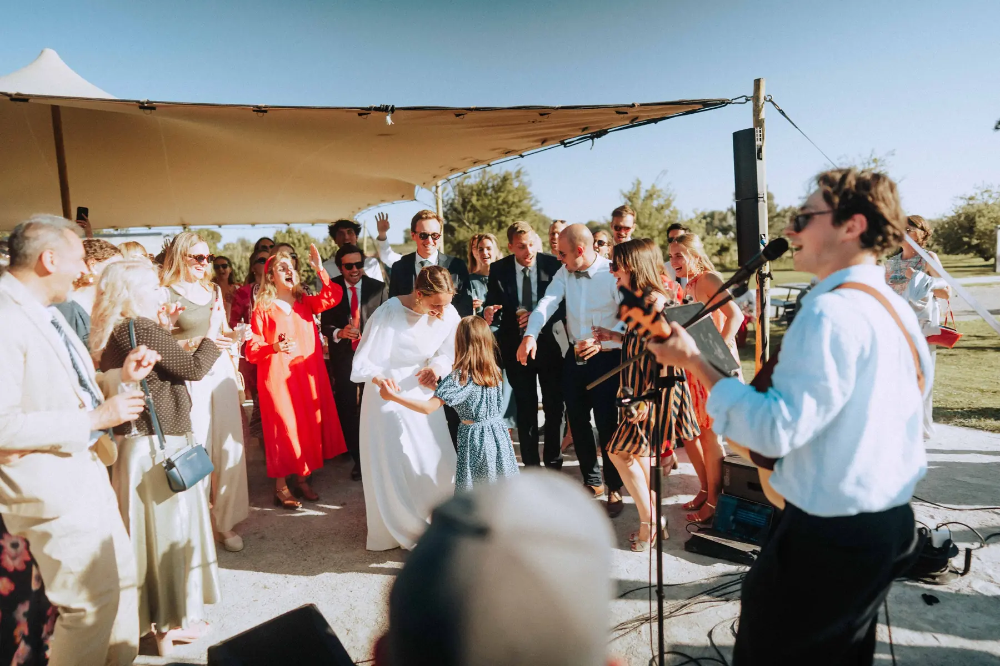

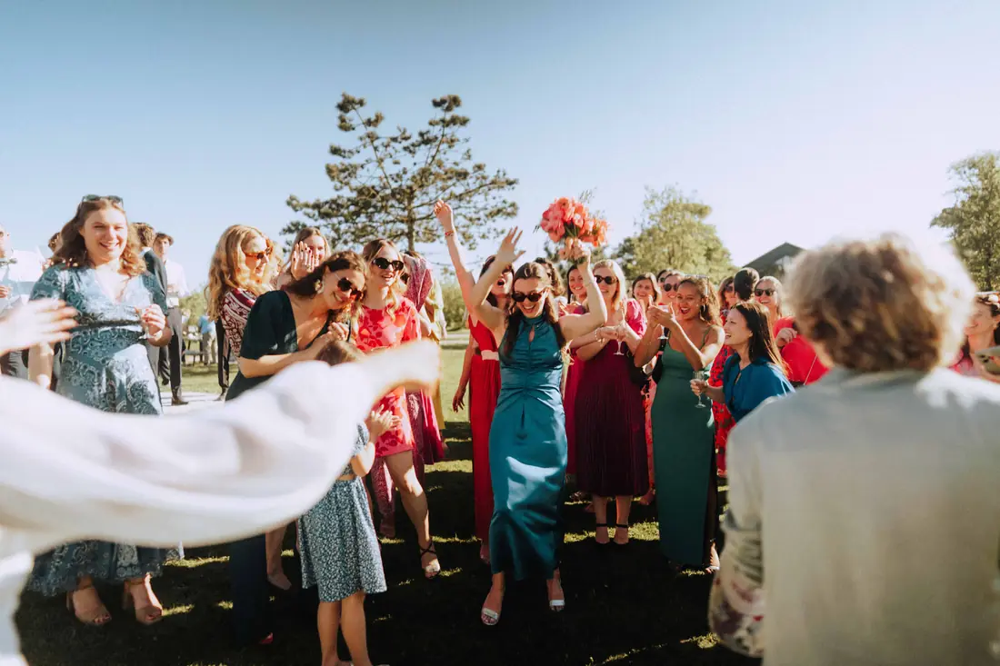
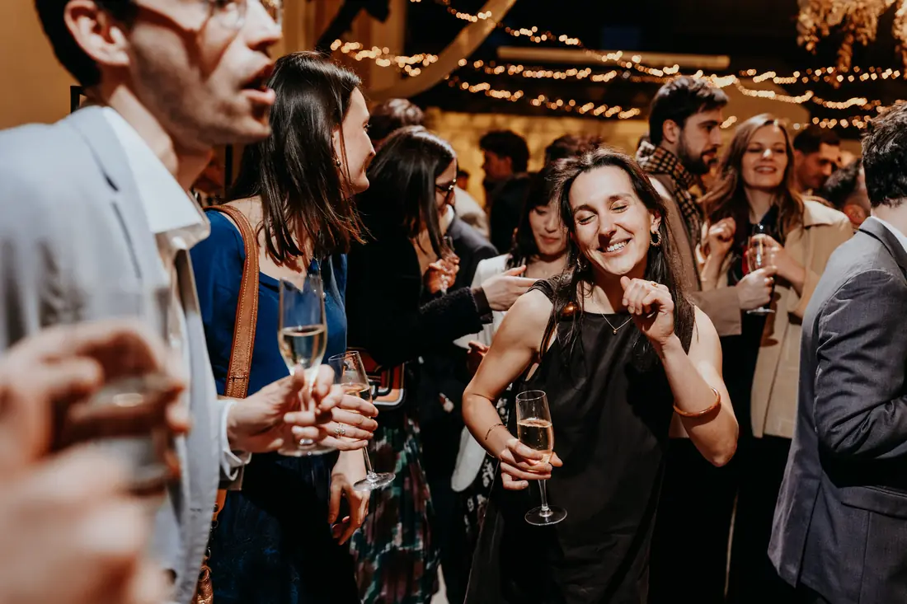
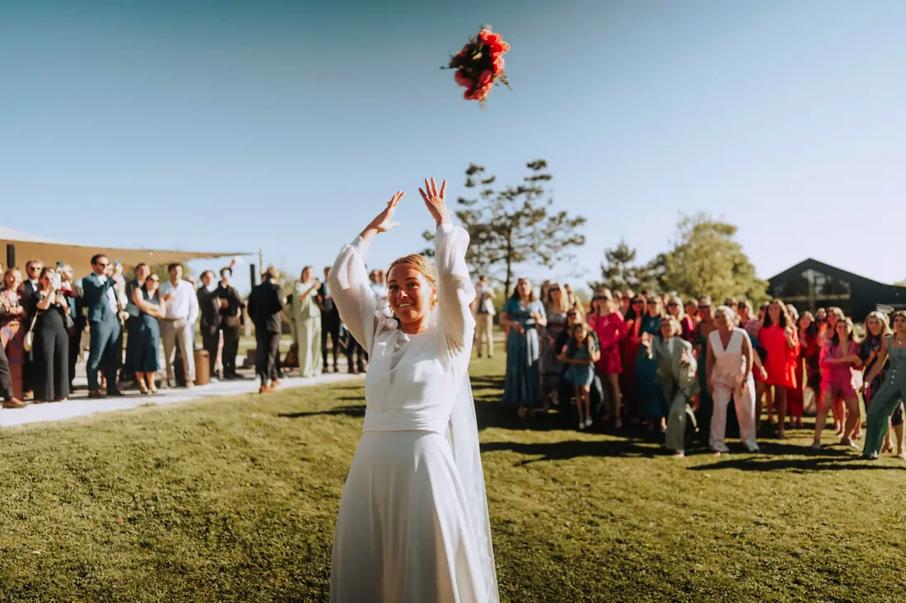

Published on LiveTonight, Linkaband and Google.
“Carl and JamBag were perfect, truly perfect. An outstanding performance that set our drinks reception on fire.”
“Carl and JamBag were perfect, truly perfect. An outstanding performance that set our drinks reception on fire.”
“A band that is warm and professional, musically and personally. A wide range of songs, there is something for everyone.”
“Our clients loved it so much they asked for the same thing this year! Professional, groovy, great vocals.”
“The second time I have booked them, and every guest agreed: extraordinary. A safe bet.”
“Very professional and attentive. They suggested songs that matched the theme of the venue.”
“JamBag delighted our hundred guests with a varied and always spot-on repertoire.”
“An attentive, friendly and talented band that played a big part in the success of the evening.”
“They were incredibly flexible at the last minute. They made my dream come true by playing All You Need Is Love with our guests.”
“We had a special request: to play with the band at the end of our celebrant-led ceremony. Carl and Quentin made it happen.”
“JamBag simply set our wedding on fire. Everyone danced, it was one of the best moments of the day.”
“Your performances were perfect and created real emotion! Our guests loved it, and so did we.”
“An unforgettable moment, incredible energy. Everything was smooth, festive and perfectly orchestrated.”
“Every guest loved it and asked me where I had found them. Three superb voices, a repertoire for all generations.”
They trusted us
Turn it up. All the videos, with their stories
 The quartetI'll Be There For YouWatch the video: The quartet, I'll Be There For You
The quartetI'll Be There For YouWatch the video: The quartet, I'll Be There For You
 Full bandChâteau d'AvelinWatch the video: the full band at Château d'Avelin
Full bandChâteau d'AvelinWatch the video: the full band at Château d'Avelin
 The trioMarry You, at Les Hauts-de-BarbieuxWatch the video: The trio, cajon version
The trioMarry You, at Les Hauts-de-BarbieuxWatch the video: The trio, cajon version
 The duoGuitar and cajonWatch the video: The duo, guitar and cajon
JamBag liveTourcoing Music LiveWatch the video: JamBag at Tourcoing Music Live
The duoGuitar and cajonWatch the video: The duo, guitar and cajon
JamBag liveTourcoing Music LiveWatch the video: JamBag at Tourcoing Music Live
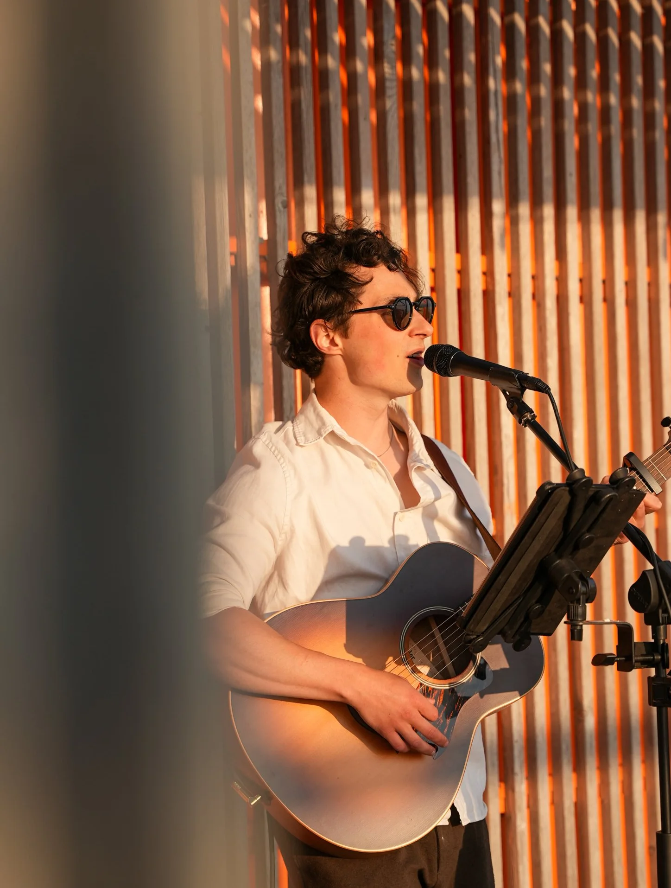
The soloCarl, at Le SafranWatch the video: solo, Carl at Le Safran, Le Touquet The soloQuentin, guitar and vocalsWatch the video: The solo, Quentin, guitar and vocals
The soloQuentin, guitar and vocalsWatch the video: The solo, Quentin, guitar and vocals
 The soloCarl, White PartyWatch the video: solo, Carl at a White Party
The soloCarl, White PartyWatch the video: solo, Carl at a White Party
Reinterpreted our way, in pop-rock, with our own arrangements. Ready to go, and you can always add your own touch.
At the heart of JamBag is a quartet. For more intimate moments, the same team plays as a trio, a duo or solo.
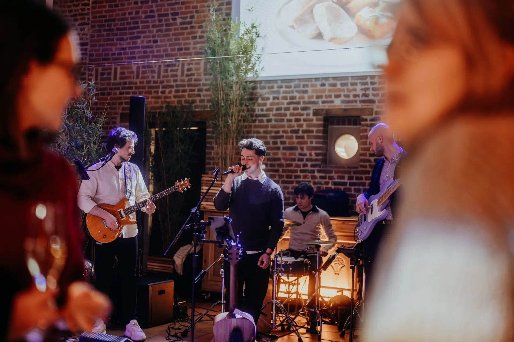
Vocals and acoustic guitar, electric guitar, bass, drums
The heart of JamBag. Two hours of live music built for the dance floor, between groove, rock and big sing-along choruses. The line-up we recommend for an evening party.
From €4,825 incl. VAT2 hours of live music, sound system and sound engineer included
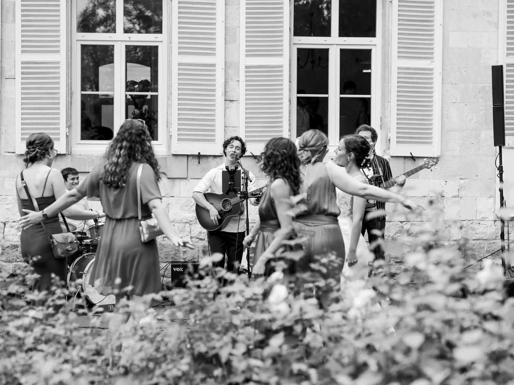
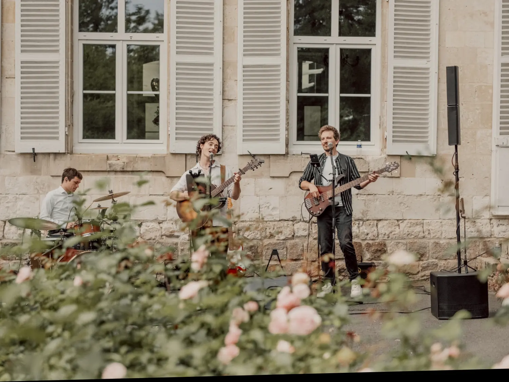
Vocals and acoustic guitar, bass, drums or cajon
The compact version of the quartet. Elegant during a cocktail, powerful enough to open the dance floor.
From €3,975 incl. VAT2 hours of live music, sound system included
Vocals and acoustic guitar, cajon
Gentle percussion joins the guitar. Depth and rhythm, without ever drowning out conversation.
From €2,375 incl. VAT2 hours of live music, sound system included
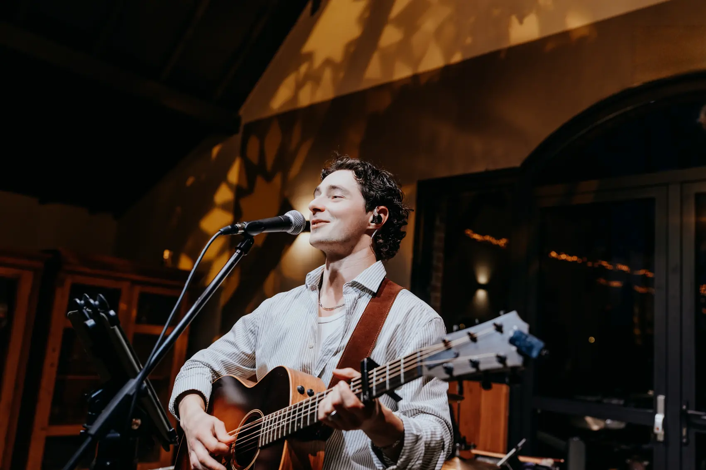
Vocals and acoustic guitar
Carl, his voice and his guitar. Gentle for a ceremony, and a real party starter once the evening gets going: the whole room sings, and ends up on the dance floor.
Watch CarlVocals and guitar
The quartet's virtuoso guitarist, Quentin also performs solo, with his own voice and arrangements. A different colour, the same standards.
Watch QuentinFrom €1,425 incl. VAT2 hours of live music, sound system included

For a big stage or a festival, the quartet is joined by more musicians, guest voices and a full technical crew. A tailor-made show, quoted on request.
When the live set ends, our partner DJs take over until the end of the night.

We grew up in the same music school in Tourcoing, and we have played together for years. You can hear it from the very first notes.
A show, and formats where your teams become the heroes of the night.
A setlist designed so the energy never drops.
Timeless hits reinterpreted in pop-rock, and an audience invited to sing and dance from the first song to the last.
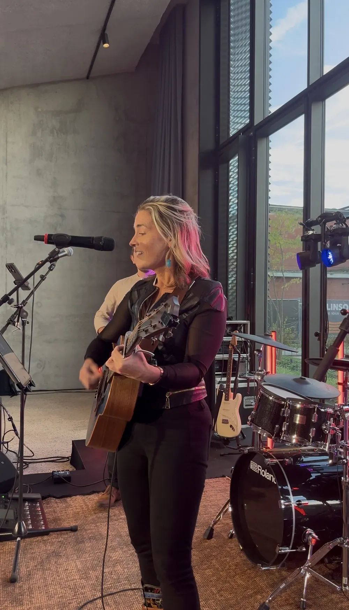
Get your colleagues involved.
The band opens the evening, then invites your teams on stage to sing or play. Instruments are provided, our musicians accompany everyone live. Spontaneous, unifying, unforgettable.
Ideal to close a seminar or conference
An hour to sing together.
At lunchtime or at the end of the day, solo or as a cajon duo, at your premises. Mics passed around, and everyone sings. One-off or regular.
Ideal for bringing teams together
One moment or several: you choose. Most often, our couples trust us with the ceremony and drinks reception, or the evening party.
The menu
Celebrant-led or religious, fully customisable: entrance, exchange of rings, exit. We learn the songs that feel like you.
A warm atmosphere, lounge or already festive, that lets conversation flow and then gets the first dancers up.
The quartet takes the floor. Two hours of live music where three generations sing the same choruses.
Our partner DJs take over, with no dead time.
The whole day with us? That works too.
A band is only as good as the sound behind it. Three ways to get there.
Recommended1Your venue or agency has its own supplier.
They set up sound and lights from our technical rider. We arrive, we play: this is where the show is at its best.
 2
2Nothing in place at the venue?
We bring in our supplier: stage, sound, lights and a technician. A full production, quoted separately.
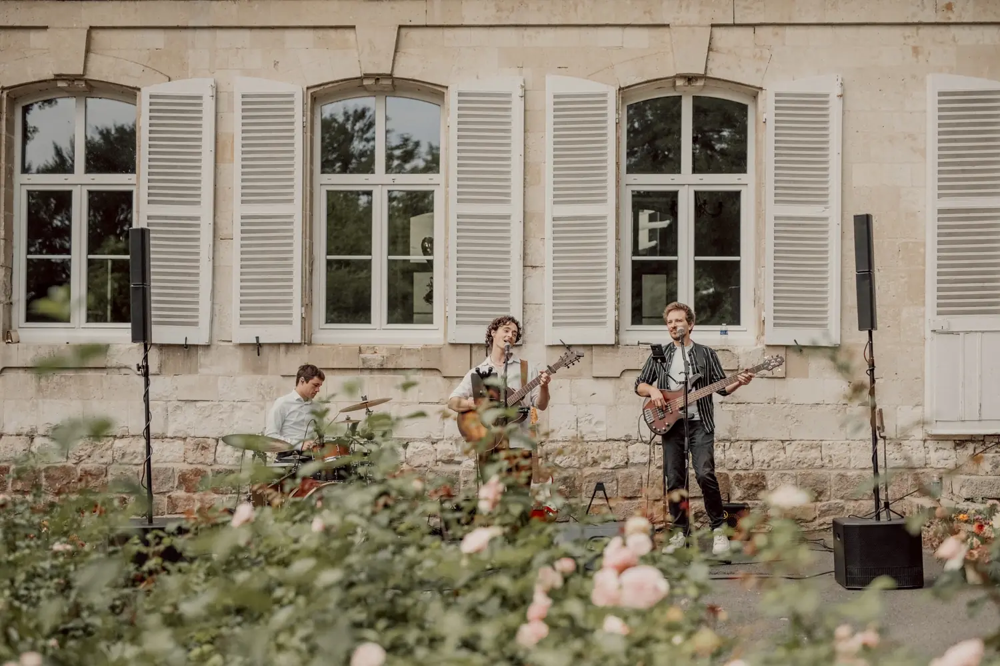
3For smaller formats.
We bring our own sound system and some lighting. Ideal for a ceremony, a cocktail or a small gathering.
Technical riders
Your event, your venue, your guests.
Line-up, sound, schedule: clear and precise.
Setlist, key moments, special requests.
We usually arrive three hours ahead. You enjoy.
For two hours of live music, sound system included: from €1,425 incl. VAT solo, €2,375 as a duo, €3,975 as a trio and €4,825 as a quartet, with a sound engineer. Travel is included in the Lille area. Every event is unique: your quote is tailored to it.
We are based in France, near Lille, and we travel wherever you celebrate: Paris, Brussels, the rest of Europe and beyond. Travel costs are stated in the quote.
The quartet: vocals and acoustic guitar, electric guitar, bass and drums. It's the heart of the band. Depending on your event, we also play as a trio, duo or solo, and the quartet grows into a full band for big stages.
The quartet, led by Carl. Each musician has a dedicated stand-in within the JamBag family. If the lead voice ever had to change, we would introduce them and confirm with you before the event.
The concert goes ahead, whatever happens. Every musician has a dedicated stand-in within the JamBag family: we handle the replacement and always let you know. If a concert could not go ahead because of us, it would be fully refunded. It has never happened.
The simplest option: the sound and lighting supplier of your venue or agency sets up from our technical rider. Otherwise, we bring in our technical partner, or we come self-contained for smaller formats. Everything is detailed in the quote.
Yes. The show is ready to go, built so the evening never dips, and you can suggest up to five songs. For a song that needs a dedicated rehearsal, or beyond five, we look at it together in the quote. And when the mood is right, we also play requests on the spot.
Our line-ups are planned for two hours of live music: the right length to keep the intensity from the first song to the last. An hour and a half is possible, and the concert can run to three hours, with the extra hour charged separately. We usually arrive three hours ahead for set-up and soundcheck; sometimes one hour is enough when the sound is already in place.
Video not showing? Open on YouTube